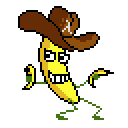

Functional Reactive Programming
Tikhon Jelvis (tikhon@jelv.is)
Press → key to advance.
Zoom in/out: Ctrl or Command + +/-
1 Goals
- Program reactive systems declaratively
- Purely functional:
- GUIs
- Controllers
- Music
- Games
- …
2 Main Idea
- Make time explicit
- Program with values over time
- Handle both continuous and discrete time
3 Behaviors and Events
- Behavior (\(\B\)): value continuous over time (signal)
- Event (\(\E\)): value at a particular time
- Stream (\(\S\)): infinite list of events ordered by time
4 Semantics
- Time has to be totally ordered
- Very simple denotational semantics
- \(\lb \B \alpha \rb = \lambda time \to \alpha\)
- \(\lb \E \alpha \rb = time \times \alpha\)
- \(\S\alpha = [\E\alpha ...] = \E(\alpha \times \S\alpha)\)
5 Curry-Howard
- Temporal Logic
- Propositions quantified over time
- \(\square x\) "x always holds" \(\leftrightarrow \B\)
- \(\Diamond x\) "x will eventually hold" \(\leftrightarrow \E\)
- Modal Logic
- \(\square x \Leftrightarrow \lnot\Diamond\lnot x\)
- \(\Diamond x \Leftrightarrow \lnot\square\lnot x\)
6 Dependent Types
- Types based on temporal logic:
- \(\square x \equiv \forall t' \in [t, \infty).\ x_{t'}\)
- \(\B\alpha \equiv \Pi t' : time.\ \alpha_{t'}\)
- \(\Diamond x \equiv \exists t' \in [t, \infty).\ x_{t'}\)
- \(\E\alpha \equiv \Sigma t' : time.\ \alpha_{t'}\)
- \(\square x \equiv \forall t' \in [t, \infty).\ x_{t'}\)
- Start time consistency
7 Demo
Haskell

Reactive Banana
8 Combinators
accumB ∷ α → Stream (α → α) → Behavior αwhenE ∷ Behavior Bool → Stream α → Stream αunion ∷ Stream α → Stream α → Stream α- Functor (Haskell, not OCaml)
(<$>) ∷ (α → β) → Stream α → Stream β(<$) ∷ β → Stream α → Stream β
9 Life

Code: github.com/TikhonJelvis/Reactive-Life
10 Background
- Functions:
blank ∷ Lifestep ∷ Life → Lifemodify ∷ Point → Life → Life
- Widgets:
pauseButtonlifePaneltimer: event every 100ms
11 Input Streams
time ∷ Stream ()- from
timer
- from
pauses ∷ Stream ()- each
pauseButtonpress
- each
clicks ∷ Stream Point- each click on
lifePanel
- each click on
12 Core Values
active ∷ Behavior Boolean
active = accumB False (not <$ pauses)
changes ∷ Stream (Life → Life)
changes = whenE active (step <$ time) `union`
modify <$> clicks
life ∷ Behavior Life
life = accumB blank changes
13 Output
sink: bind behavior to a property of a widgetsink lifePanel [paint := life] sink pauseButton [text := symb <$> active] where symb b = if b then "❚❚" else "▶"
14 Interface
- Monads
- Everybody knows and loves monads
- Applicative Functors
- Generalization of monads
- Less powerful but easier to use
- Arrows
- Reactive values/time not first-class
- Less space/time leaks
15 More
- Co-algebras
- Different formalization
- Bisimilarity, coinduction and corecursion
- Other temporal quantifiers:
- \(\circ x\) "x will be true at the next time"
- \(x \triangleright y\) "x will be true then y will be true"